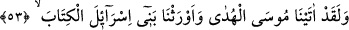
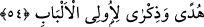
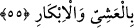
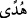
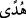
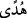
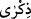

53. Andolsun ki biz Mûsâ’ya hidâyeti verdik ve İsrâiloğullar’ına, Kitab’ı miras
bıraktık.
“Andolsun ki biz,” sırf fazl ü ihsânımızla İmranoğlu Mûsâ’ya hidâyeti,” yâni doğru
yolu gösteren sahifeler, mûcizeler, şer’î kanunlar gibi rehberleri “verdik ve
İsrâiloğulları’na Kitab’ı miras bıraktık.” “Îrâs,” miras bırakmak demektir. O Kitaptan
maksad Tevrat’tır. Gerçek mânâda miras sadece malla ilgili olduğu için, burada hakikî
anlamında düşünülmesi zordur. Bu sebeple, peygamberlerin ilimden ve dini konularda
rehberlik eden kitaptan başka bir şey mîras bırakamayacaklarını göstermek maksadıyla
mecâzen teberrük anlamı kasdedilmiştir. Mânâ şöyledir: Mûsâ’dan sonra onlara,
İsrailoğullarına yâni Yakub’un evlâdlarına Tevrat’ı bıraktık. Zira dînî konularda rehber
edinilen diğer şeyler Mûsâ’nın ölümüyle ortadan kalkmıştı. Hâsılı, İsrâiloğulları
Tevrat’ı elden ele dolaştırıp nesilden nesile birbirlerine mîras bıraktılar.
54. Akıl sahipleri için doğruluk rehberi ve öğüt olan (bir kitab).
Hiç akıl edemeyenlere değil, akıl erdirdiği ile amel eden “akıl sâhipleri için
doğruluk rehberi...” “ “sapıklığı beyan eden bir rehber’ ya da “yol gösterici”
mânâsındadır.
“Ve bir öğüt” yâni tezkire, vaaz, ya da hatırlatıcı “olarak…”
“ ile “ arasındaki fark şudur: , bir başka şey için delil olabilen şeydir.
Dolayısıyla onun, bilinmekte iken unutulmuş olan başka bir şeyi hatırlatması gerekli
değildir. Ancak  böyle değildir. Peygamberlerin kitapları, her iki kısmı da kapsar.
Çünkü bazı âyetler kendi içinde bir delil iken bazıları da başka eski ilâhî kitaplarda
geçen prensipleri hatırlatır.
55. (Resûlüm!) Şimdi sen sabret. Çünkü Allah’ın vaâdi gerçektir. Günahının
bağışlanmasını iste. Akşam-sabah Rabbini hamd ile tesbîh et.
“(Resûlüm!) Şimdi sen sabret” ifâdesi, “Doğrusu biz, peygamberlerimize… yardım
ederiz” (el-Mümin 40/51) âyetiyle “Andolsun biz Mûsâ’ya hidâyet verdik” (el-